In development
A curated selection of my strongest projects.
Animai Kingdom
Prototype
AI animal companion for conversation, productivity, motivation and brainstorming. This is my Student Innovation Project, currently in development.
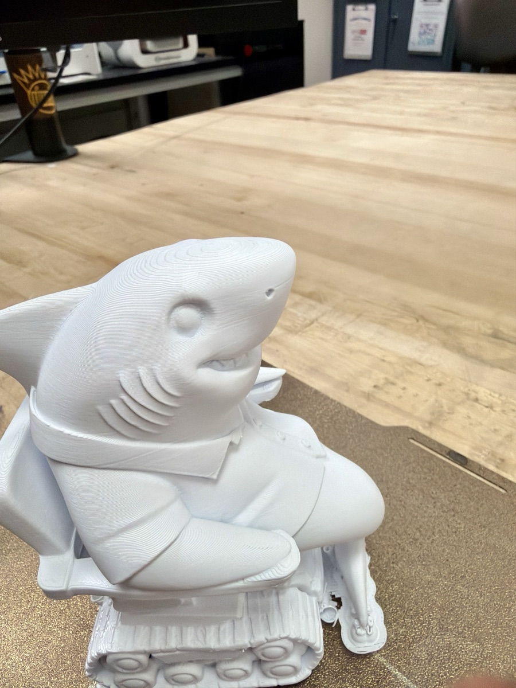
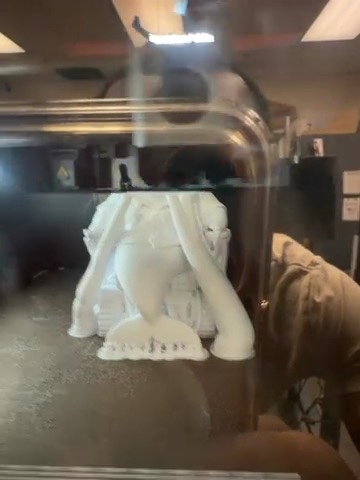
VORTEXA
In development
Desktop local-LLM assistant with a chat interface, model switching and session conversation history. The Python implementation uses CustomTkinter and llama-cpp-python.
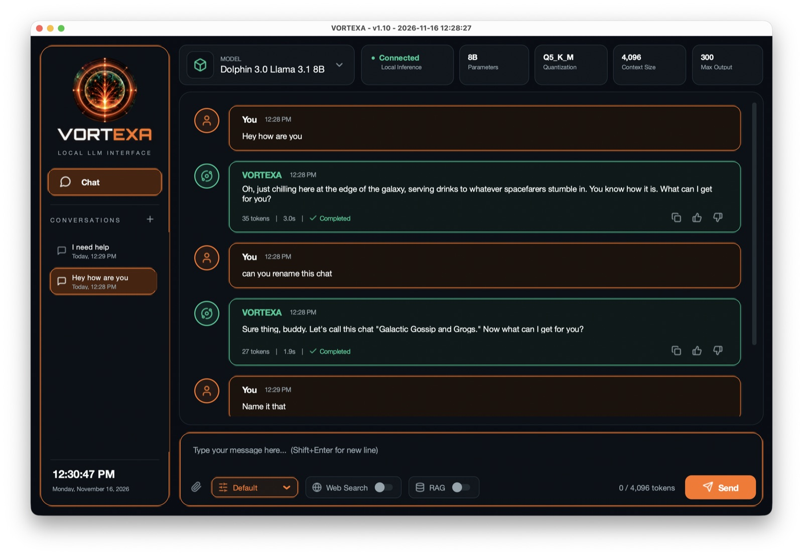
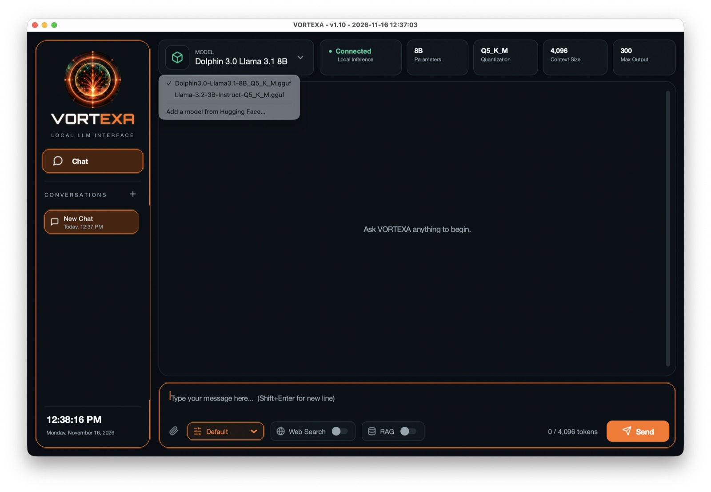
Jonnybot
In development
A grid-based night-security-robot simulation that learns where to patrol with tabular Q-learning. Built with Python and Tkinter.
Jonnybot moves around a 6-by-10 room using four movement actions. Each cell holds a reward, from −50 penalties to a +500 goal, and the robot updates a Q-table from those rewards as it explores. You choose how many moves an episode lasts, then start and reset runs from the window.
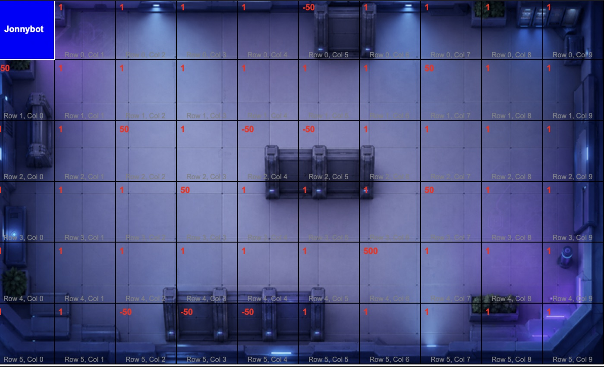
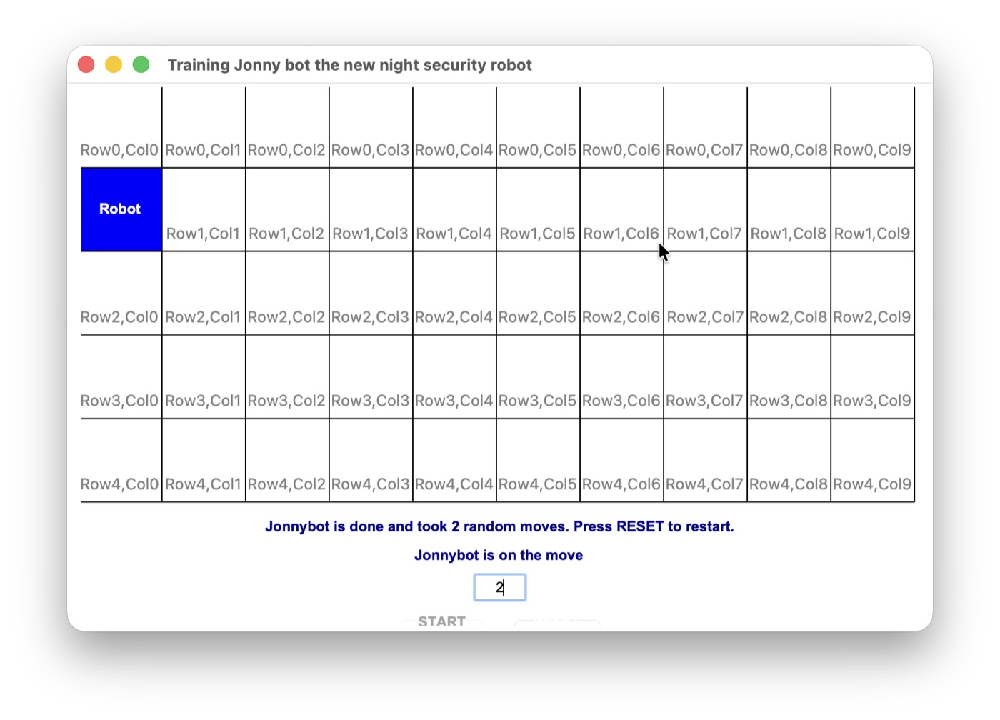
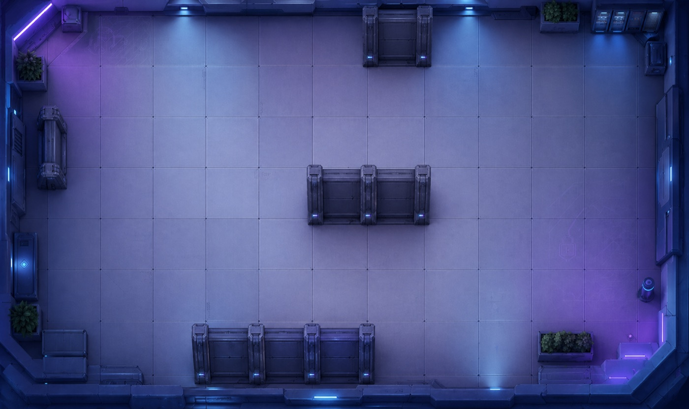
Greenspires
Prototype
A mobile journaling app that connects reflection entries to the growth of a virtual plant. Built with TypeScript, React Native and Expo.
Users pick and name a plant, then write session reflections that earn growth points and move the plant through growth stages. The prototype includes onboarding, home and settings screens, with plant state saved locally on the device. An AI-generated reflection reply feature is planned.
Pixel Bang
In development
A local text-to-image tool that turns written prompts into generated images, running entirely on my own computer.
A Python command-line app loads Stability AI's SDXL-Turbo diffusion model through Hugging Face diffusers and PyTorch. It runs on the Apple Silicon GPU when available (falling back to CUDA or CPU), generates an image in a few denoising steps, and saves it as a PNG. A seed option makes results repeatable.
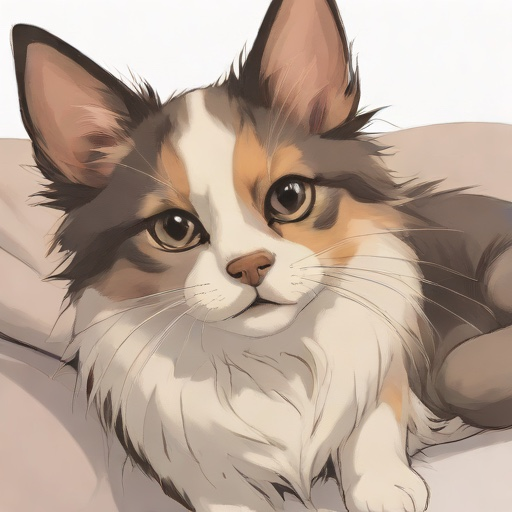
Safe Bank
Prototype
An educational banking web app built with Robert to practice deposits, withdrawals and balance calculations. Built with HTML, CSS and JavaScript.
Users see their safe’s balance and can deposit or withdraw money. The JavaScript keeps each transaction in a list, recalculates the balance after every change, formats amounts as currency and saves data in the browser. We planned the screens with wireframes before building it.
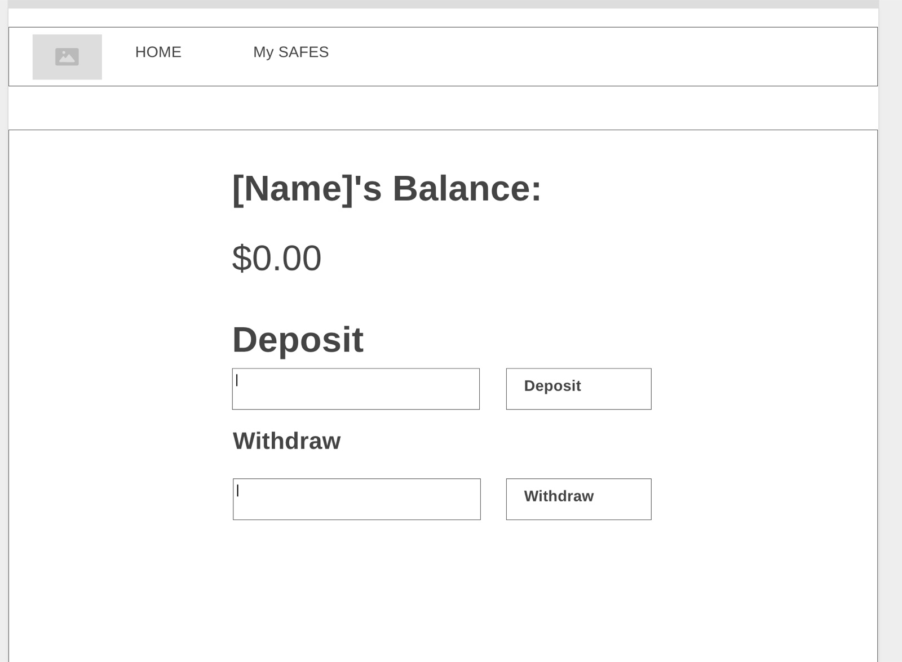
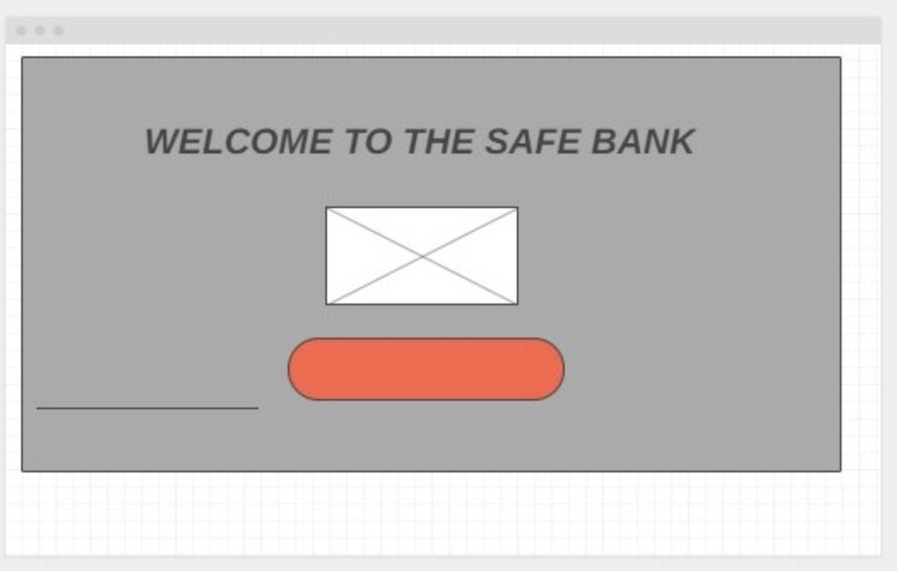
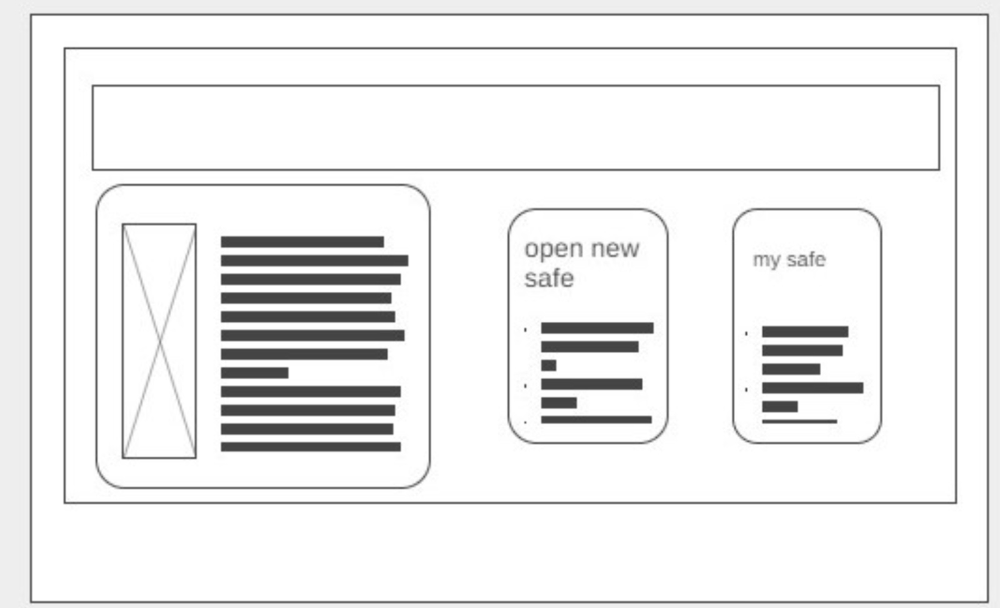
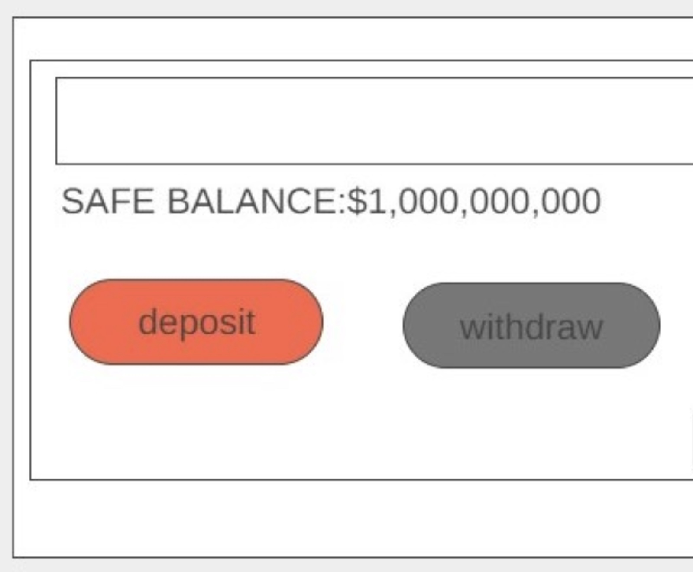